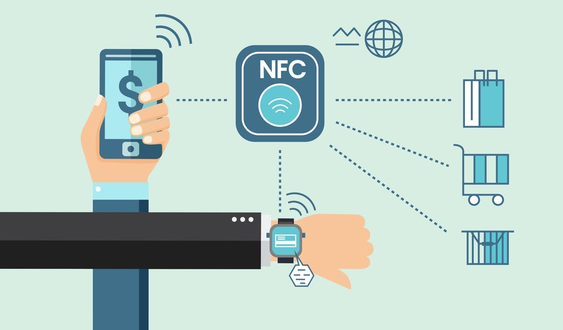

NFC (Near-field communication) е множество от комуникационни протоколи за комуникация между две електронни
устройства на разстояние до 4 см (1.5 in). NFC предлага ниско скоростна връзка с прости
настройки, който може да се използва за установяване на безжична връзка с по-големи възможности.
NFC устройствата може да имат ролята на електронно идентифициране на документи и карти. Те може да се
използват за безконтактни разплащателни системи, които да позволяват мобилни разплащания, които да замянят
физическите карти. Друго приложение на NFC е споделянето на малки файлове, като контакти и визитки, или
инициализирането на връзка за предаване на по-големи файлове, като снимки и видеа.

NFC е базиран на RFID (radio-frequency identification technology), която позволява предаването на
електричество и комуникацията с устройства, които нямат собствено захранване използвайки радио вълни. Това се
използва за идентификация, уторизация и следене. Подобни технологии са QR кодовете и баркодовете.
Near-field communication (NFC) описва технология, която може да се използва за безконтактен обмен на данни
на къси разстояния. Две устройства с възможност за NFC са свързани чрез контакт от точка до точка на
разстояние от 0 до 2 cm. Тази връзка може да се използва за обмен на данни (като данни за процеси,
така и информация за поддръжка и обслужване) между устройствата. Този интерфейс може да се използва и за
параметризиране на компонента.
Преносимите устройства, поддържащи NFC, могат да бъдат снабдени с приложен софтуер, например за четене на
електронни етикети или извършване на плащания, когато са свързани към NFC-съвместима система. Те са
стандартизирани за NFC протоколи, заменяйки собствените технологии, използвани от по-ранни системи.
Подобно на други технологии за „проксимити карти“, NFC се основава на индуктивно свързване между две така
наречени антени, налични в устройства с NFC – например смартфон и принтер – комуникиращи в една или двете
посоки, използвайки честота от 13,56 MHz в глобално достъпен нелицензиран радиочестотен ISM обхват,
използващ стандарта за въздушен интерфейс ISO/IEC 18000-3 при скорости на данни, вариращи от 106 до 424
kbit/s.
Всяко активно NFC устройство може да работи в един или повече от трите режима:
- Емулация на NFC карта
Позволява на устройства с активиран NFC, като смартфони, да действат като смарт карти, позволявайки на
потребителите да извършват транзакции като плащане или билети.
- NFC четец/записващ
Позволява на устройства с активиран NFC да четат информация, съхранявана на евтини NFC етикети, вградени в
етикети или интелигентни плакати.
- NFC peer-to-peer
Позволява на две устройства с активиран NFC да комуникират помежду си, за да обменят информация по ad hoc
начин.
NFC етикетите са пасивни хранилища на данни, които могат да бъдат прочетени и при някои обстоятелства
записани от
NFC устройство. Те обикновено съдържат данни (към 2015 г. между
96 и
8 192 байта) и
са само за четене при нормална употреба, но могат да бъдат презаписвани. Приложенията включват сигурно съхранение на
лични данни (например информация за дебитна или кредитна карта, данни за програмата за лоялност, лични
идентификационни номера (ПИН), контакти).
NFC етикетите могат да бъдат кодирани по поръчка от техните
производители или да използват спецификациите на индустрията.
Стандартите са предоставени от
NFC Forum. Форумът отговаря за популяризирането на технологията и определянето
на стандарти и удостоверява съответствието на устройствата. Сигурните комуникации са достъпни чрез прилагане на
алгоритми за криптиране, както се прави за кредитни карти и ако отговарят на критериите за разглеждане на личната
мрежа.
Стандартите за
NFC обхващат комуникационни протоколи и формати за обмен на данни. Те се основават на
съществуващите стандарти за радиочестотна идентификация (RFID), включително ISO/IEC 14443 и FeliCa. Стандартите
включват ISO/IEC 18092 и тези, определени от
NFC Forum. В допълнение към
NFC форума, групата GSMA
определи платформа за внедряване на GSMA
NFC стандарти в мобилни телефони. Усилията на GSMA включват Trusted
Services Manager, Single Wire Protocol, тестване/сертифициране и защитен елемент.
Програма за патентно лицензиране за
NFC е в процес на внедряване от France Brevets, патентен фонд, създаден
през 2011 г. Тази програма беше в процес на разработка от Via Licensing Corporation, независимо дъщерно дружество на
Dolby Laboratories, и беше прекратена през май 2012 г. Платформено-независима безплатна библиотека за
NFC с
отворен код, libnfc, е достъпна под GNU Lesser General Public License.
Настоящите и очакваните приложения включват безконтактни транзакции, обмен на данни и опростена настройка на
по-сложни комуникации като Wi-Fi. Освен това, когато едно от свързаните устройства има връзка с интернет, другото
може да обменя данни с онлайн услуги.